专题01 全册计算题分类训练（9种类型45道）

考点01 有理数的加减法
考点02 有理数的乘除法
考点03 有理数的混合运算
考点04 有理数的简便运算
考点05 合并同类项
考点06 化简求值
考点07 度分秒的混合运算
考点08 解一元一次方程去括号
考点09 解一元一次方程去 分母
分母

考点01 有理数的加减法
1．计算： ．
．
2．计算：
3．计算： ．
．
4．计算：
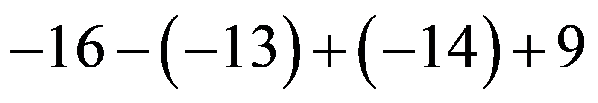
．5．计算： ．
．
考点02 有理数的乘除法
6．计算：
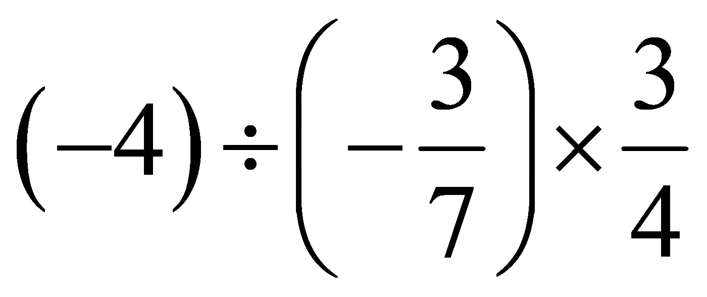
7．计算：
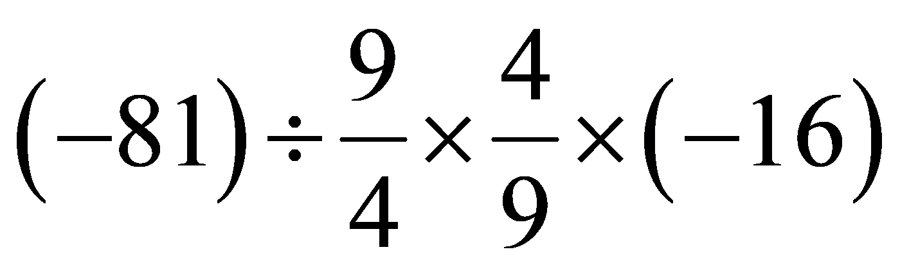
．8．计算： ．
．
9．计算：
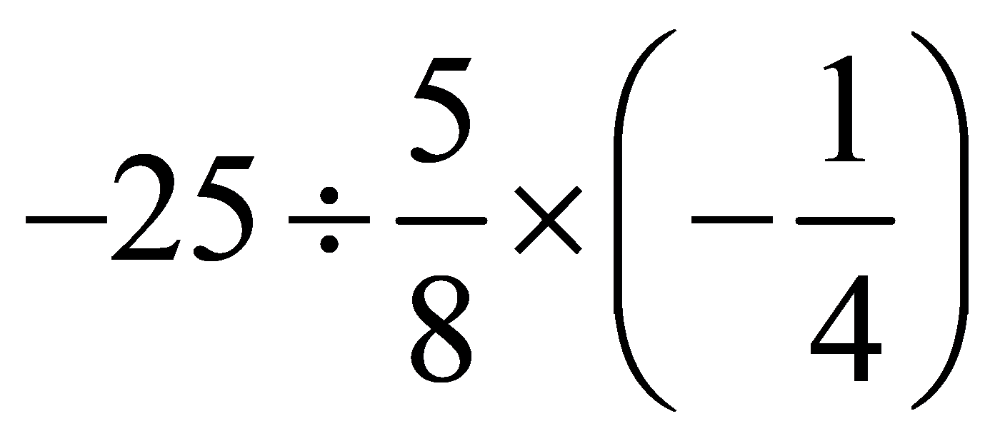
．10．计算： ．
．
考点03 有理数的混合运算
11．计算：
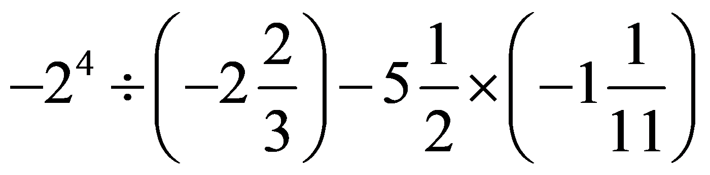
．12．计算： ．
．
13．计算：
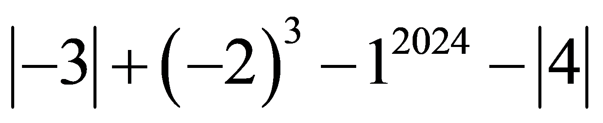
．14．计算：
15．计算： ．
．
考点04 有理数的简便运算
16．简便运算．
(1)
(2)
17．用简便运算计算：
(1)
(2)
18．简便运算：
(1)
(2)
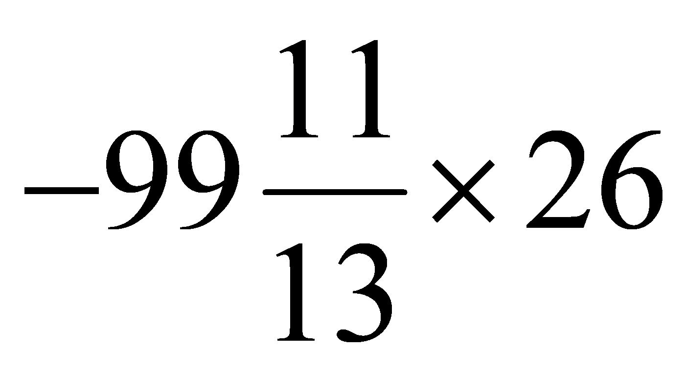
19．简便计算：
(1) ；
；
(2)
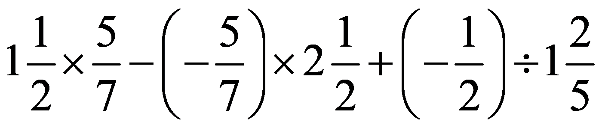
20．简便计算：
(1)
(2)
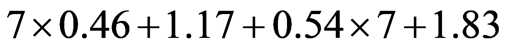
考点05 合并同类项
21．合并同类项：
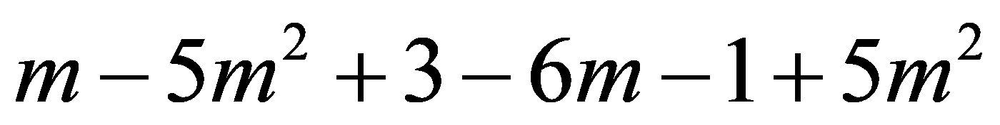
．22．合并同类项： ．
．
23．先去括号，再合并同类项： ．
．
24．先去括号，再合并同类项： ．
．
25．先去括号，再合并同类项：
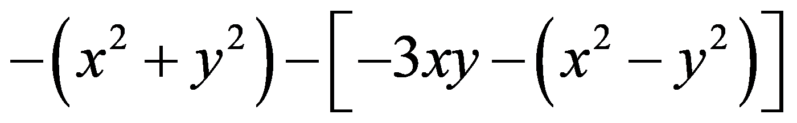
．考点06 化简求值
26．先化简，再求值： ，其中
，其中 ．
．
27．先化简，再求值 ，其中
，其中 ，
， ．
．
28．先化简，再求值： ，其中
，其中 ，
，
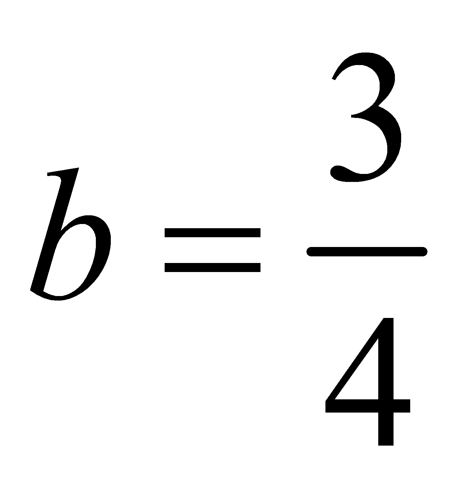
．29．先化简，再求值： ，其中
，其中 ，．
，．
30．化简求值：
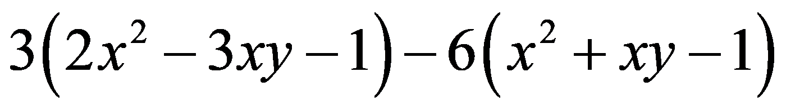
，其中x，y满足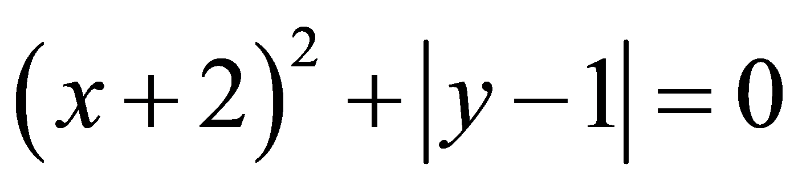
．考点07 度分秒的混合运算
31．计算
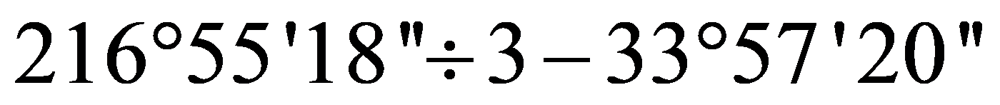
．32．计算
33．计算：
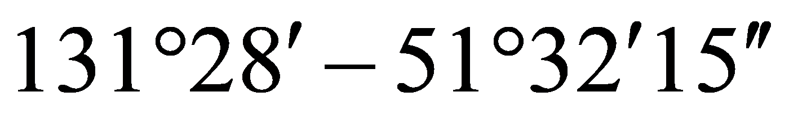
．34．计算：
35．计算：
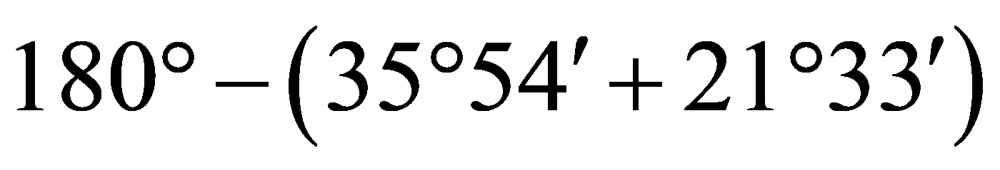
．考点08 解一元一次方程去括号
36．解方程：
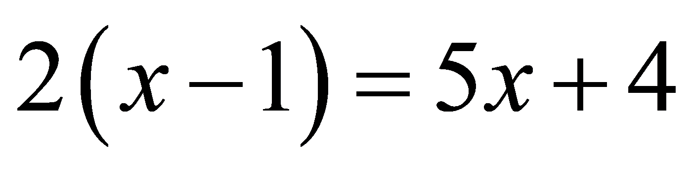
．37．解方程：
38．解方程：
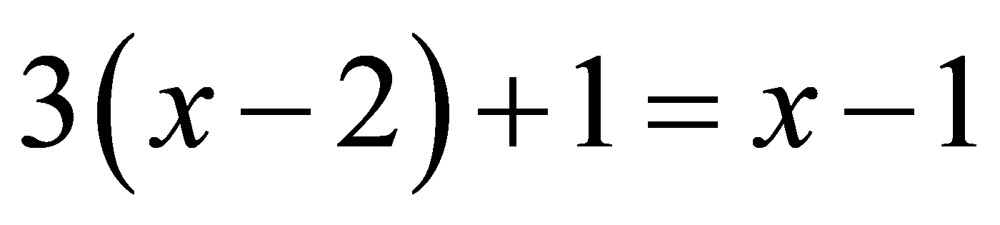
．39．解方程： ．
．
40．解方程： ．
．
考点09 解一元一次方程去分母
41．解方程： ．
．
42．解方程： ．
．
43．解方程：
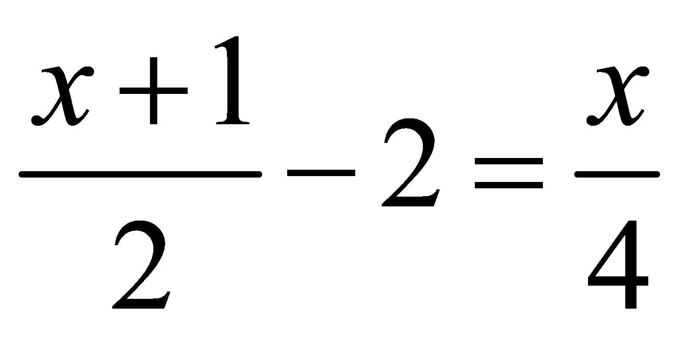
．44．解方程：
 ．
．
45．解方程：